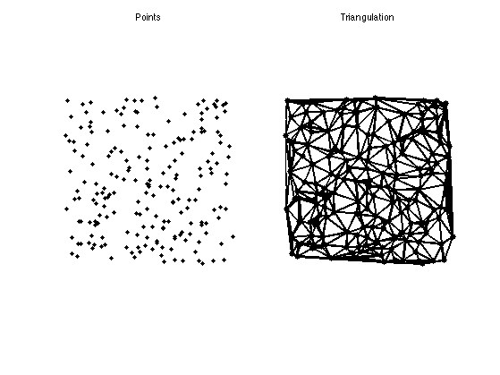
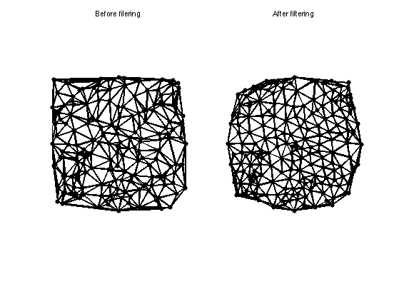
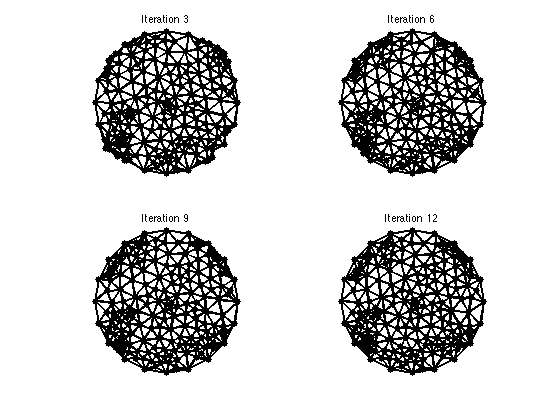

\[
\newcommand{\NN}{\mathbb{N}}
\newcommand{\CC}{\mathbb{C}}
\newcommand{\GG}{\mathbb{G}}
\newcommand{\LL}{\mathbb{L}}
\newcommand{\PP}{\mathbb{P}}
\newcommand{\QQ}{\mathbb{Q}}
\newcommand{\RR}{\mathbb{R}}
\newcommand{\VV}{\mathbb{V}}
\newcommand{\ZZ}{\mathbb{Z}}
\newcommand{\FF}{\mathbb{F}}
\newcommand{\KK}{\mathbb{K}}
\newcommand{\UU}{\mathbb{U}}
\newcommand{\EE}{\mathbb{E}}
\newcommand{\Aa}{\mathcal{A}}
\newcommand{\Bb}{\mathcal{B}}
\newcommand{\Cc}{\mathcal{C}}
\newcommand{\Dd}{\mathcal{D}}
\newcommand{\Ee}{\mathcal{E}}
\newcommand{\Ff}{\mathcal{F}}
\newcommand{\Gg}{\mathcal{G}}
\newcommand{\Hh}{\mathcal{H}}
\newcommand{\Ii}{\mathcal{I}}
\newcommand{\Jj}{\mathcal{J}}
\newcommand{\Kk}{\mathcal{K}}
\newcommand{\Ll}{\mathcal{L}}
\newcommand{\Mm}{\mathcal{M}}
\newcommand{\Nn}{\mathcal{N}}
\newcommand{\Oo}{\mathcal{O}}
\newcommand{\Pp}{\mathcal{P}}
\newcommand{\Qq}{\mathcal{Q}}
\newcommand{\Rr}{\mathcal{R}}
\newcommand{\Ss}{\mathcal{S}}
\newcommand{\Tt}{\mathcal{T}}
\newcommand{\Uu}{\mathcal{U}}
\newcommand{\Vv}{\mathcal{V}}
\newcommand{\Ww}{\mathcal{W}}
\newcommand{\Xx}{\mathcal{X}}
\newcommand{\Yy}{\mathcal{Y}}
\newcommand{\Zz}{\mathcal{Z}}
\newcommand{\al}{\alpha}
\newcommand{\la}{\lambda}
\newcommand{\ga}{\gamma}
\newcommand{\Ga}{\Gamma}
\newcommand{\La}{\Lambda}
\newcommand{\Si}{\Sigma}
\newcommand{\si}{\sigma}
\newcommand{\be}{\beta}
\newcommand{\de}{\delta}
\newcommand{\De}{\Delta}
\renewcommand{\phi}{\varphi}
\renewcommand{\th}{\theta}
\newcommand{\om}{\omega}
\newcommand{\Om}{\Omega}
\renewcommand{\epsilon}{\varepsilon}
\newcommand{\Calpha}{\mathrm{C}^\al}
\newcommand{\Cbeta}{\mathrm{C}^\be}
\newcommand{\Cal}{\text{C}^\al}
\newcommand{\Cdeux}{\text{C}^{2}}
\newcommand{\Cun}{\text{C}^{1}}
\newcommand{\Calt}[1]{\text{C}^{#1}}
\newcommand{\lun}{\ell^1}
\newcommand{\ldeux}{\ell^2}
\newcommand{\linf}{\ell^\infty}
\newcommand{\ldeuxj}{{\ldeux_j}}
\newcommand{\Lun}{\text{\upshape L}^1}
\newcommand{\Ldeux}{\text{\upshape L}^2}
\newcommand{\Lp}{\text{\upshape L}^p}
\newcommand{\Lq}{\text{\upshape L}^q}
\newcommand{\Linf}{\text{\upshape L}^\infty}
\newcommand{\lzero}{\ell^0}
\newcommand{\lp}{\ell^p}
\renewcommand{\d}{\ins{d}}
\newcommand{\Grad}{\text{Grad}}
\newcommand{\grad}{\text{grad}}
\renewcommand{\div}{\text{div}}
\newcommand{\diag}{\text{diag}}
\newcommand{\pd}[2]{ \frac{ \partial #1}{\partial #2} }
\newcommand{\pdd}[2]{ \frac{ \partial^2 #1}{\partial #2^2} }
\newcommand{\dotp}[2]{\langle #1,\,#2\rangle}
\newcommand{\norm}[1]{|\!| #1 |\!|}
\newcommand{\normi}[1]{\norm{#1}_{\infty}}
\newcommand{\normu}[1]{\norm{#1}_{1}}
\newcommand{\normz}[1]{\norm{#1}_{0}}
\newcommand{\abs}[1]{\vert #1 \vert}
\newcommand{\argmin}{\text{argmin}}
\newcommand{\argmax}{\text{argmax}}
\newcommand{\uargmin}[1]{\underset{#1}{\argmin}\;}
\newcommand{\uargmax}[1]{\underset{#1}{\argmax}\;}
\newcommand{\umin}[1]{\underset{#1}{\min}\;}
\newcommand{\umax}[1]{\underset{#1}{\max}\;}
\newcommand{\pa}[1]{\left( #1 \right)}
\newcommand{\choice}[1]{ \left\{ \begin{array}{l} #1 \end{array} \right. }
\newcommand{\enscond}[2]{ \left\{ #1 \;:\; #2 \right\} }
\newcommand{\qandq}{ \quad \text{and} \quad }
\newcommand{\qqandqq}{ \qquad \text{and} \qquad }
\newcommand{\qifq}{ \quad \text{if} \quad }
\newcommand{\qqifqq}{ \qquad \text{if} \qquad }
\newcommand{\qwhereq}{ \quad \text{where} \quad }
\newcommand{\qqwhereqq}{ \qquad \text{where} \qquad }
\newcommand{\qwithq}{ \quad \text{with} \quad }
\newcommand{\qqwithqq}{ \qquad \text{with} \qquad }
\newcommand{\qforq}{ \quad \text{for} \quad }
\newcommand{\qqforqq}{ \qquad \text{for} \qquad }
\newcommand{\qqsinceqq}{ \qquad \text{since} \qquad }
\newcommand{\qsinceq}{ \quad \text{since} \quad }
\newcommand{\qarrq}{\quad\Longrightarrow\quad}
\newcommand{\qqarrqq}{\quad\Longrightarrow\quad}
\newcommand{\qiffq}{\quad\Longleftrightarrow\quad}
\newcommand{\qqiffqq}{\qquad\Longleftrightarrow\qquad}
\newcommand{\qsubjq}{ \quad \text{subject to} \quad }
\newcommand{\qqsubjqq}{ \qquad \text{subject to} \qquad }
\]
Basics About 2D Triangulation
This tour explores some basics about 2D triangulated mesh (loading, display, manipulations).
Contents
Installing toolboxes and setting up the path.
You need to download the following files: signal toolbox, general toolbox and graph toolbox.
You need to unzip these toolboxes in your working directory, so that you have toolbox_signal, toolbox_general and toolbox_graph in your directory.
For Scilab user: you must replace the Matlab comment '%' by its Scilab counterpart '//'.
Recommandation: You should create a text file named for instance numericaltour.sce (in Scilab) or numericaltour.m (in Matlab) to write all the Scilab/Matlab command you want to execute. Then, simply run exec('numericaltour.sce'); (in Scilab) or numericaltour; (in Matlab) to run the commands.
Execute this line only if you are using Matlab.
getd = @(p)path(p,path);
Then you can add the toolboxes to the path.
getd('toolbox_signal/');
getd('toolbox_general/');
getd('toolbox_graph/');
Planar Triangulation
A planar triangulation is a collection of n 2D points, whose coordinates are stored in a (2,n) matrix vertex, and a topological collection of triangle, stored in a (m,2) matrix faces.
Number of points.
n = 200;
Compute randomized points in a square.
vertex = 2*rand(2,n)-1;
A simple way to build a triangulation of the convex hull of the points is to compute the Delaunay triangulation of the points.
faces = delaunay(vertex(1,:),vertex(2,:))';
One can display the triangulation.
clf;
subplot(1,2,1);
hh = plot(vertex(1,:),vertex(2,:), 'k.');
axis('equal'); axis('off');
set(hh,'MarkerSize',10);
title('Points');
subplot(1,2,2);
plot_mesh(vertex,faces);
title('Triangulation');

Point Modification
It is possible to modify the position of the points like a particles system. The dynamics is govered by the connectivity to
enfoce an even distribution. During the modification of the positions, the connectivity is updated.
Fix some points on a disk.
m = 20;
t = linspace(0,2*pi,m+1); t(end) = [];
vertexF = [cos(t);sin(t)];
vertex(:,1:m) = vertexF;
faces = delaunay(vertex(1,:),vertex(2,:))';
Initialize the positions.
vertex1 = vertex;
Compute the delaunay triangulation.
faces1 = delaunay(vertex1(1,:),vertex1(2,:))';
Compute the list of edges.
E = [faces([1 2],:) faces([2 3],:) faces([3 1],:)];
p = size(E,2);
We build the adjacency matrix of the triangulation.
A = sparse( E(1,:), E(2,:), ones(p,1) );
Normalize the adjacency matrix to obtain a smoothing operator.
d = 1./sum(A);
iD = spdiags(d(:), 0, n,n);
W = iD * A;
Apply the filtering.
vertex1 = vertex1*W';
Set of the position of fixed points.
vertex1(:,1:m) = vertexF;
Display the positions before / after.
clf;
subplot(1,2,1);
plot_mesh(vertex,faces);
title('Before filering');
subplot(1,2,2);
plot_mesh(vertex1,faces1);
title('After filtering');

Exercice 1: (check the solution) Compute several steps of iterative filterings, while ensuring the positions of the fixed points.
exo1;
